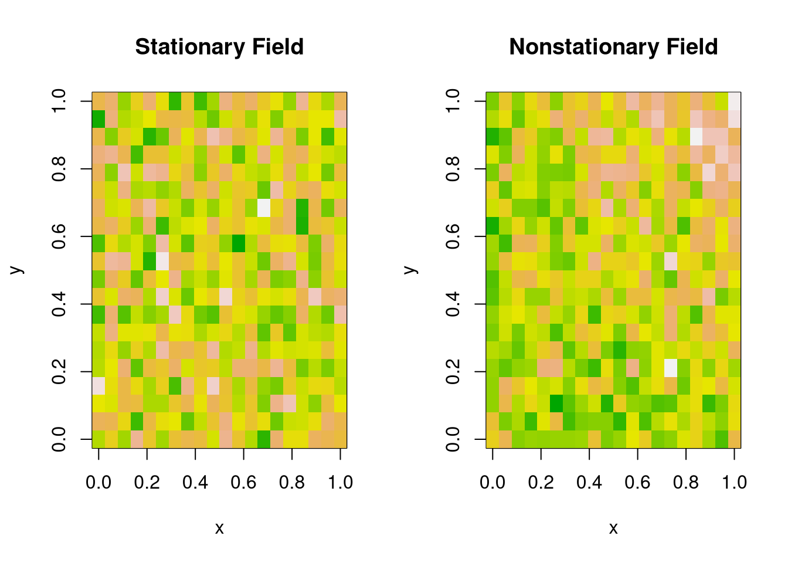
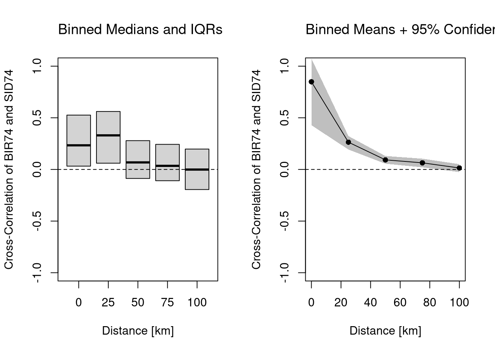

Many observational datasets have temporal dependence, meaning that values at one point in time are related to past values. This violates the standard assumption of independence used in many statistical methods.
Stock prices are classic examples of temporally dependent processes. If Apple’s stock was high yesterday, it is more likely (but not guaranteed) to be high today.
Code
# highest price each daylibrary(plotly)stock <-read.csv('https://raw.githubusercontent.com/plotly/datasets/master/finance-charts-apple.csv')fig <-plot_ly(stock, type ='scatter', mode ='lines')%>%add_trace(x =~Date, y =~AAPL.High) %>%layout(showlegend = F)fig
A random walk is the simplest mathematical model of temporal dependence. Each new value is just the previous value plus a random shock (white noise).
In both plots, we see that today’s value is not independent of past values. In contrast to cross-sectional data (e.g. individual incomes), time series often require special methods to account for memory and nonstationarity.
In any case, if often helps to see the marginal distribution too.
A stationary time series is one whose statistical properties do not change over time. Formally
Stationary Means: \(E[Y_{t}]=E[Y_{t'}]\) for all time periods \(t, t'\)
Stationary Variances: \(V[Y_{t}]=V[Y_{t'}]\) for all time periods \(t, t'\)
For example, consider the data generating process \(Y_t = \beta t + \epsilon_t\), with \(\epsilon_t \sim \text{N}(0, \sigma + \alpha t)\), with parameters \(\beta\) affecting mean stationarity and \(\alpha\) affecting variance stationarity.
Time series often exhibit serial dependence—values today are related to past values, and potentially to other processes evolving over time. We can visualize this using correlation-based diagnostics.
The Autocorrelation Function (AFC) measures correlation between a time series and its own lagged values: \[\begin{eqnarray}
ACF_{Y}(k) = \frac{Cov(Y_{t},Y_{t-k})}{ \sqrt{Var(Y_{t})Var(Y_{t-k})}}
\end{eqnarray}\]
This helps detect temporal persistence (memory). For stationary processes, the ACF typically decays quickly, whereas for nonstationary processes, it typically decays slowly or persists.
This is useful for detecting lagged relationships between two series, such as leading indicators or external drivers. (If \(X\) is white noise, any visible structure in the CCF likely reflects nonstationarity in \(Y\).)
Many observational datasets exhibit spatial dependence, meaning that values at one location tend to be related to values at nearby locations. This violates the standard assumption of independent observations used in many classical statistical methods.
For example, elevation is spatially dependent: if one location is at high elevation, nearby locations are also likely (though not guaranteed) to be high. Similarly, socioeconomic outcomes like disease rates or income often cluster geographically due to shared environmental or social factors.
Just as stock prices today depend on yesterday, spatial variables often depend on neighboring regions, creating a need for specialized statistical methods that account for spatial autocorrelation.
Raster vs. Vector Data.
Spatial data typically comes in two formats, each suited to different types of information:
Vector data uses geometric shapes (points, lines, polygons) to store data. E.g., a census tract map that stores data on population demographics.
Raster data uses grid cells (typically squares, but sometimes hexagons) to store data. E.g., an image that stores data on elevation above seawater.
Code
# Vector Datalibrary(sf)northcarolina_vector <-st_read(system.file("shape/nc.shp", package="sf"))## Reading layer `nc' from data source `/home/Jadamso/R-Libs/sf/shape/nc.shp' using driver `ESRI Shapefile'## Simple feature collection with 100 features and 14 fields## Geometry type: MULTIPOLYGON## Dimension: XY## Bounding box: xmin: -84.32385 ymin: 33.88199 xmax: -75.45698 ymax: 36.58965## Geodetic CRS: NAD27plot(northcarolina_vector['BIR74'], main='Number of Live Births in 1974')
Just as with temporal data, stationarity in spatial data means that the statistical properties (like mean, variance, or spatial correlation) are roughly the same across space.
Stationary Means: \(E[Y(s)]=E[Y(s')]\) for all spatial locations \(s,s'\)
Stationary Vars: \(V[Y(s)]=V[Y(s')]\) for all spatial locations \(s,s'\)
Code
# Simulated 2D spatial fieldsset.seed(1)n <-20x <- y <-seq(0, 1, length.out = n)grid <-expand.grid(x = x, y = y)# 1. Stationary: Gaussian with constant mean and varz_stationary <-matrix(rnorm(n^2, 0, 1), n, n)# 2. Nonstationary: Mean increases with x and yz_nonstationary <-outer(x, y, function(x, y) 3*x*y) +rnorm(n^2, 0, 1)par(mfrow =c(1, 2))# Stationary fieldimage(x, y, z_stationary,main ="Stationary Field",col =terrain.colors(100),xlab ="x", ylab ="y")# Nonstationary fieldimage(x, y, z_nonstationary,main ="Nonstationary Field",col =terrain.colors(100),xlab ="x", ylab ="y")

Measures of spatial association.
Just like temporal data may exhibit autocorrelation, spatial data may show spatial autocorrelation or spatial cross-correlation—meaning that observations located near each other are more (or less) similar than we would expect under spatial independence.
Autocorrelation. We can measure spatial autocorrelation using Moran’s I, a standard index of spatial dependence. Global Moran’s I summarizes overall spatial association (just like the ACF)
Code
# Raster Data Exampleautocor(luxembourg_elevation_raster, method='moran', global=T)## elevation ## 0.8917057
Cross-Correlation. We can also assesses the relationship between two variables at varying distances.
Code
# Vector Data Exampledat <-as.data.frame(northcarolina_vector)[, c('BIR74', 'SID74')]mu <-colMeans(dat)# Format Distancesdmat <-st_distance( st_centroid(northcarolina_vector) )dmat <- units::set_units(dmat, 'km')# At Which Distances to Compute CCF# summary(dmat[,1])rdists <-c(-1,seq(0,100,by=25)) # includes 0rdists <- units::set_units(rdists , 'km')# Compute Cross-CovariancesvarXY <-prod( apply(dat, 2, sd) )CCF <-lapply( seq(2, length(rdists)), function(ri){# Which Observations are within (rmin, rmax] distance dmat_r <- dmat d_id <- (dmat_r > rdists[ri-1] & dmat_r <= rdists[ri]) dmat_r[!d_id] <-NA# Compute All Covariances (Stationary) covs_r <-lapply(1:nrow(dmat_r), function(i){ pairsi <-which(!is.na(dmat_r[i,])) covXiYj <-sapply(pairsi, function(j) { dXi <- dat[i,1] - mu[1] dYj <- dat[j,2] - mu[2]return(dXi*dYj) })return(covXiYj) }) corXY <-unlist(covs_r)/varXYreturn(corXY)} )
Code
# Plot Cross-Covariance Functionx <-as.numeric(rdists[-1])par(mfrow=c(1,2))# Distributional Summaryboxplot(CCF,outline=F, whisklty=0, staplelty=0,ylim=c(-1,1), #quantile(unlist(CCF), probs=c(.05,.95)),names=x, main='',font.main=1,xlab='Distance [km]',ylab='Cross-Correlation of BIR74 and SID74')title('Binned Medians and IQRs', font.main=1, adj=0)abline(h=0, lty=2)# Inferential SummaryCCF_means <-sapply(CCF, mean)plot(x, CCF_means,ylim=c(-1,1),type='o', pch=16,main='',xlab='Distance [km]',ylab='Cross-Correlation of BIR74 and SID74')title('Binned Means + 95% Confidence Band', font.main=1, adj=0)abline(h=0, lty=2) # Quick and Dirty Subsampling CICCF_meanCI <-sapply(CCF, function(corXY){ ss_size <-floor(length(corXY)*3/4) corXY_boot <-sapply(1:200, function(b){ corXY_b <-sample(corXY, ss_size, replace=F)mean(corXY_b, na.rm=T) })quantile(corXY_boot, probs=c(.025,.975), na.rm=T)})polygon( c(x, rev(x)), c(CCF_meanCI[1,], rev(CCF_meanCI[2,])), col=grey(0,.25), border=NA)

17.3 Economic Interdependence
In addition to spatial and temporal dependence, many observational datasets exhibit interdependence between variables for economic reasons. In the minds of economists, many variables are endogenous: meaning that they are an economic outcome determined (or caused: \(\to\)) by some other variable.
If \(Y \to X\), then we have reverse causality
If \(Y \to X\) and \(X \to Y\), then we have simultaneity
If \(Z\to Y\) and either \(Z\to X\) or \(X \to Z\), then we have omitted a potentially important variable
Now recall the linear model is \(Y=X\beta + \epsilon\). The endogeneity issues imply \(X\) and \(\epsilon\) are correlated, which is a barrier to interpreting OLS estimates as reflecting a causal relationship.1
Code
# Simulate data with an endogeneity issuen <-300z <-rbinom(n,1,.5)xy <-sapply(z, function(zi){ y <-rnorm(1,zi,1) x <-rnorm(1,zi*2,1)c(x,y)})xy <-data.frame(x=xy[1,],y=xy[2,])plot(y~x, data=xy, pch=16, col=grey(0,.5))abline(lm(y~x,data=xy))
I will focus on the seminal economic example to provide some intuition.
Competitive Market Equilibrium.
This model has three structural relationships: (1) market supply is the sum of quantities supplied by individual firms at a given price, (2) market demand is the sum of quantities demanded by individual people at a given price, and (3) market supply equals market demand in equilibrium. Assuming market supply and demand are linear, we can write these three relationships as \[\begin{eqnarray}
\label{eqn:market_supply}
Q_{S}(P) &=& \alpha_{S} + \beta_{S} P + E_{S},\\
\label{eqn:market_demand}
Q_{D}(P) &=& \alpha_{D} - \beta_{D} P + E_{D},\\
\label{eqn:market_eq}
Q_{D} &=& Q_{S} = Q.
%% $Q_{D}(P) = \sum_{i} q_{D}_{i}(P)$,
\end{eqnarray}\] This last equation implies a simultaneous “reduced form” relationship where both the price and the quantity are outcomes. With a linear parametric structure to these equations, we can use algebra to solve for the equilibrium price and quantity analytically as \[\begin{eqnarray}
P^{*} &=& \frac{\alpha_{D}-\alpha_{S}}{\beta_{D}+\beta_{S}} + \frac{E_{D} - E_{S}}{\beta_{D}+\beta_{S}}, \\
Q^{*} &=& \frac{\alpha_{S}\beta_{D}+ \alpha_{D}\beta_{S}}{\beta_{D}+\beta_{S}} + \frac{E_{S}\beta_{D}+ E_{D}\beta_{S}}{\beta_{D}+\beta_{S}}.
\end{eqnarray}\]
Code
# Demand Curve Simulatorqd_fun <-function(p, Ad=8, Bd=-.8, Ed_sigma=.25){ Qd <- Ad + Bd*p +rnorm(1,0,Ed_sigma)return(Qd)}# Supply Curve Simulatorqs_fun <-function(p, As=-8, Bs=1, Es_sigma=.25){ Qs <- As + Bs*p +rnorm(1,0,Es_sigma)return(Qs)}# Quantity Supplied and Demanded at 3 Pricescbind(P=8:10, D=qd_fun(8:10), S=qs_fun(8:10))## P D S## [1,] 8 1.1925652 0.01120111## [2,] 9 0.3925652 1.01120111## [3,] 10 -0.4074348 2.01120111# Market Equilibrium Findereq_fun <-function(demand, supply, P){# Compute EQ (what we observe) eq_id <-which.min( abs(demand-supply) ) eq <-c(P=P[eq_id], Q=demand[eq_id]) return(eq)}
Code
# Simulations ParametersN <-300# Number of Market InteractionsP <-seq(5,10,by=.01) # Price Range to Consider# Generate Data from Competitive Market # Plot Underlying Processplot.new()plot.window(xlim=c(0,2), ylim=range(P))EQ1 <-sapply(1:N, function(n){# Market Data Generating Process demand <-qd_fun(P) supply <-qs_fun(P) eq <-eq_fun(demand, supply, P) # Plot Theoretical Supply and Demandlines(demand, P, col=grey(0,.01))lines(supply, P, col=grey(0,.01))points(eq[2], eq[1], col=grey(0,.05), pch=16)# Save Datareturn(eq)})axis(1)axis(2)mtext('Quantity',1, line=2)mtext('Price',2, line=2)
Suppose we ask “what is the effect of price on quantity?” You can simply run a regression of quantity, \(Y\), on price, \(X\), and get the slope coefficient \(\hat{b}_{1} = \hat{C}_{Q^{*} P^{*}} / \hat{V}_{P^{*}}\). You always get a number back, but it is hard to interpret meaningfully.
Code
# Analyze Market Datadat1 <-data.frame(t(EQ1), cost='1', T=1:N)reg1 <-lm(Q~P, data=dat1)summary(reg1)## ## Call:## lm(formula = Q ~ P, data = dat1)## ## Residuals:## Min 1Q Median 3Q Max ## -0.57279 -0.11977 -0.00272 0.11959 0.45525 ## ## Coefficients:## Estimate Std. Error t value Pr(>|t|) ## (Intercept) -0.21323 0.43212 -0.493 0.6221 ## P 0.12355 0.04864 2.540 0.0116 *## ---## Signif. codes: 0 '***' 0.001 '**' 0.01 '*' 0.05 '.' 0.1 ' ' 1## ## Residual standard error: 0.1674 on 298 degrees of freedom## Multiple R-squared: 0.02119, Adjusted R-squared: 0.0179 ## F-statistic: 6.451 on 1 and 298 DF, p-value: 0.0116
This simple derivation has a profound insight: price-quantity data does not generally tell you how price affects quantity (or vice-versa). The reason is simultaneity: price and quantity mutually cause one another in markets.2
Moreover, this example also clarifies that our initial question “what is the effect of price on quantity?” is misguided. We could more sensibly ask “what is the effect of price on quantity supplied?” or “what is the effect of price on quantity demanded?”
Contamination.
With multiple linear regression, endogeneity biases are not just a problem for your main variable of interest. Suppose you are interested in how \(X_{1}\) affects \(Y\), conditioning on \(X_{2}\), and that the data generating process is linear: \(Y=\beta_{0}+\beta_{1}X_{1}+\beta_{2}X_{2}+\epsilon\). You paid special attention in your research design to find a case where \(X_{1}\) is truly exogenous. Unfortunately, if \(X_{2}\) is correlated with the error term, then there is also a bias for \(X_{1}\). The magnitude of the bias for \(X_{1}\) depends on the correlations between \(X_{1}\) and \(X_{2}\) as well as \(X_{2}\) and \(\epsilon\).3
17.4 Further Reading
Note that \(X\) and \(\epsilon\) may be correlated for other reasons too, such as when \(X\) is measured with error.↩︎
Although there are many ways this simultaneity can happen, economic theorists have made great strides in analyzing the simultaneity problem as it arises from equilibrium market relationships. In fact, 2SLS arose to understand agricultural markets.↩︎
Denoting \(X=[X_{1}, X_{2}]\), you estimate the OLS coefficients \(\hat{B}^{*}\). After algebraic work, you can find the bias \(\mathbb{E}[ \hat{B}^{*} - \beta]\) suffers from a contamination effect. \[\begin{eqnarray}
\hat{B^{*}} &=& [\hat{X}'\hat{X}]^{-1}X'y
\mathbb{E}[X'\epsilon] &=&
\begin{bmatrix}
0 \\ \rho
\end{bmatrix}\\
\mathbb{E}[ \hat{B}^{*} - \beta] &=& [\hat{X}'\hat{X}]^{-1} \begin{bmatrix}
0 \\ \rho
\end{bmatrix} \neq
\begin{bmatrix}
0 \\ \rho
\end{bmatrix}
\end{eqnarray}\]↩︎